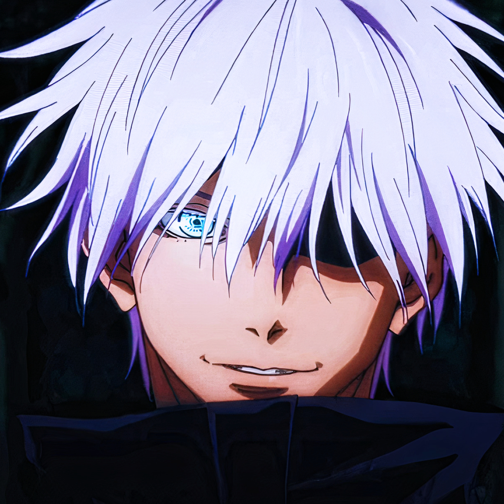
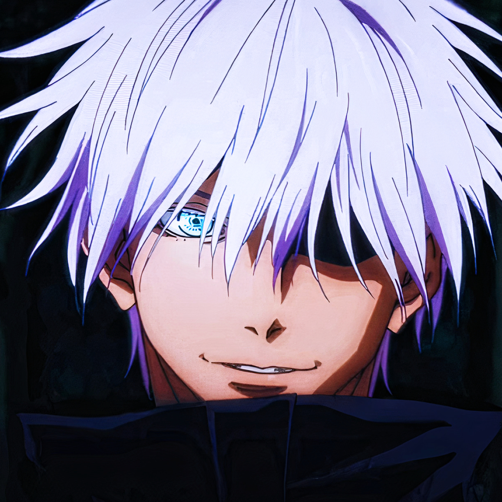

SUKUNA X SATORO GOJO | Porque sukuna só venceu com o roteiro?
28.418 visualizações Transmitido ao vivo em 24 dez. de 2023
Todos nós sabemos que Gojo era mais forte, e durante a luta, o Gege Akutami basicamente mostrou isso, pra no fim, forçar uma morte "necessária para o desenrolar da história", com ainda o Gojo confirmando em sua morte que não ganharia sem o Mahoraga? Vem entender todos os absurdos dessa luta!